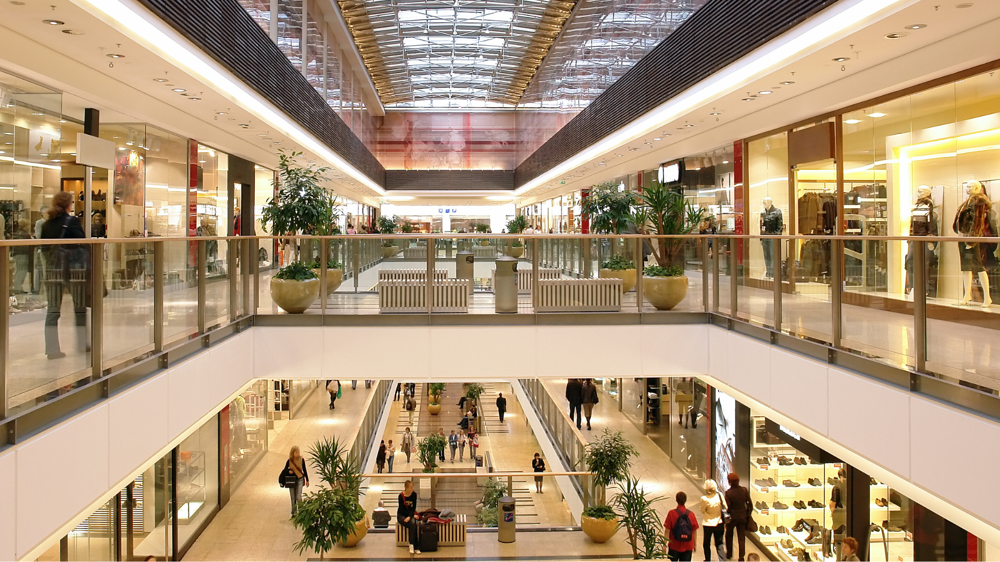
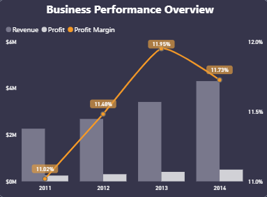
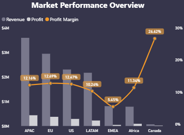
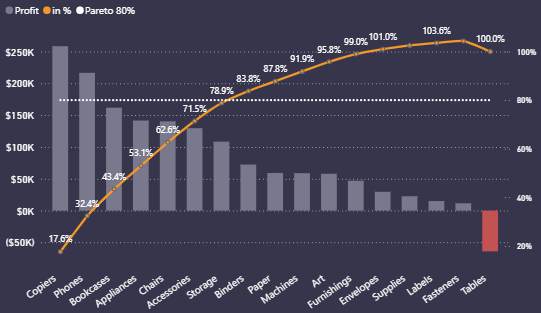
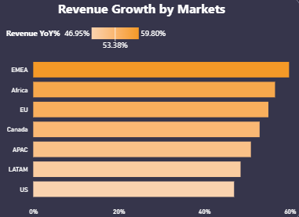

01. Business Challenge
To support Superstore's ambitious growth and market expansion goals, senior management needed actionable insights into their global operations. The company lacked a unified view of its fragmented international data. The primary objective was to analyze the raw data and answer three critical strategic questions:
- Overall Performance: What is the current state of the business in terms of revenue, profitability, and general growth trends?
- Market Analysis: How are different geographic markets performing, and where are the most promising opportunities for strategic expansion?
- Product Strategy: Which product categories and sub-categories are driving success, and what products should the company focus on strategically?
02. My Approach
To build a practical and effective dashboard, I applied principles from Stanford's Design Thinking process, walking through the problem from the perspective of a business manager:
Empathize & Define
First, I put myself in the shoes of the "Senior Manager" to clearly define the ultimate goals and the specific business questions the dashboard needed to answer.
Prototype & Test
I started by designing simple, low-fidelity layouts. I then built test versions in Power BI, constantly checking them against my initial goals to see if the layout was intuitive and answered the right questions.
Finalize & Find Insights
Once the dashboard design was finalized, I used it to explore the data, uncover meaningful trends, and develop actionable recommendations.
03. Design Thinking
Step 1. Empathize
Identify the stakeholder's goals and understand the underlying business problems.
Step 2. Define
Clearly define the core questions and metrics the dashboard must address.
Step 3. Ideate
Brainstorm data visualization layouts and key elements to display.
Step 4. Prototype & Step 5. Test
Continuously prototype and test.
04. Data Preparation & Modeling
1. Data Transform with Power Query
Since the raw dataset was relatively clean, my primary focus during the ETL process was shaping the data architecture. Key transformations included:
- Deconstructing the main flat file into a structured schema with a central
Fact_Ordertable and distinct Dimension tables. - Merging related queries to reduce redundancy and improve data integrity.
- Generating a dedicated Dim_Date table to enable comprehensive time-intelligence analysis.
2. Building the Data Model
I implemented a robust Star Schema. The central Fact table (Fact_Order) records transactional data, linked via one-to-many relationships to multiple Dimension tables (Dim_People, Dim_Return, Dim_Customer, Dim_Product, Dim_Region, and Dim_Date).
05. Visualizations
ℹ️ How to Use This Dashboard
- Sign In Required: This dashboard is embedded from Power BI Service. Please sign in with your Microsoft account when prompted to view and interact with the report.
- Exploration: Navigate between the core pages (Overview, Market, Product) using the top buttons or bottom pagination.
- Interaction: Use the side dropdowns to filter data, toggle metric buttons to change chart views, click on any chart element to cross-filter the entire page, and hover over data points to reveal detailed tooltips.
06. Key Insights & Recommendations
Key Insights
1. Revenue Grew, But Margins Stayed Flat
Revenue reached $12.64M (+51.5% YoY) and profit hit $1.5M (+52.3%), but the overall profit margin held stable at 11.61%. Trend charts show revenue and profit consistently increasing from 2011 to 2014, with the profit margin peaking at 11.95% in 2013 before a slight adjustment in 2014.

2. Canada: The Hidden Champion
While overall revenue volume in Canada is not the highest, it stands out as an exceptionally strong market with a profit margin of 26.62% — the highest across all regions. Canada achieves this by focusing on high-margin categories while keeping low-margin sales to a minimum.

3. The Product Profitability Paradox
Technology led both revenue growth and profitability (13.99% margin, $663.8K profit). Office Supplies delivered 13.69% margin consistently. But Tables caused a net loss of $64,083 globally, dragging Furniture category margin down to just 6.94%.

4. Fastest-Growing Markets
EMEA (+59.80% YoY) and Africa (+53.38% YoY) recorded the highest year-over-year revenue growth, highlighting clear expansion potential. Increased investment in infrastructure and sales teams is recommended to capture market share quickly in these regions.

Strategic Recommendations
- Expand in Canada: Canada's record 26.62% profit margin makes it the ideal expansion model. Replicate its product mix strategy (Technology & Office Supplies focus) in other markets.
- Scale Growth in EMEA & Africa: These fastest-growing markets (>50% YoY) warrant increased investment in infrastructure and sales teams to capture market share quickly.
- Boost "Star" Categories: Prioritize Technology (13.99% margin) and Office Supplies (13.69%) in marketing campaigns. Sub-categories like Copiers and Phones should be the focus.
- Restructure Margin Eroders: Discontinue or significantly reprice loss-making SKUs in the Tables category. The Chromcraft Bull-Nose Wood Oval Conference Tables alone lose >$1,800 per order.
- Customer Retention Focus: Develop loyalty programs for top customers with stable, high spending, such as Justin Ritter and Tom Ashbrook to maximize lifetime value.
07. Deep Dive: Canada & EMEA Expansion
Why Canada Has the Highest Profit Margin
Canada achieves a 26.62% profit margin — more than double the company-wide average of 11.61% — thanks to:
- Optimized Product Mix: Technology (39.29%) and Office Supplies (44.88%) make up 84% of revenue.
- Profitable Transactions: A copier order in Guelph generated $2,270 revenue with $1,112 profit (~49% margin).
- Focused Customer Base: Only 153 high-quality clients — smaller pool means lower management costs.
EMEA Market Expansion Plan
EMEA is growing at 59.80% YoY but has only a 5.45% profit margin. The expansion plan focuses on "selective, profit-focused growth":
- Prioritize high-margin Technology & Office Supplies over low-margin Furniture.
- Focus on high-value Corporate and Home-Office clients.
- Facilitate knowledge-sharing between Nicole Hansen (Canada) and Larry Hughes (EMEA).
- Start with loss-making SKU optimization in Turkey & Kazakhstan before broader rollout.
Source Code & Details
Explore the full data model, DAX measures, and dashboard files on GitHub.
⌨ View on GitHub →